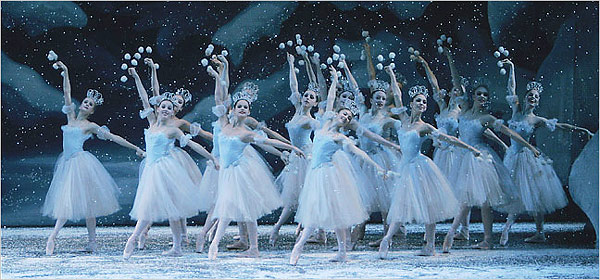
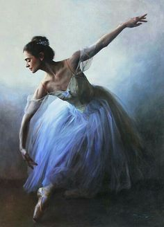
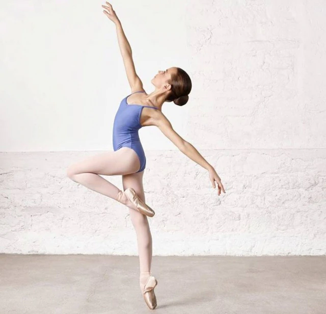
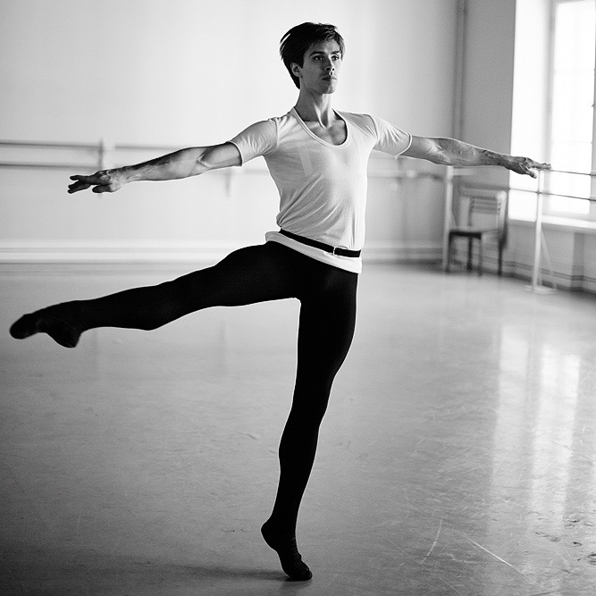
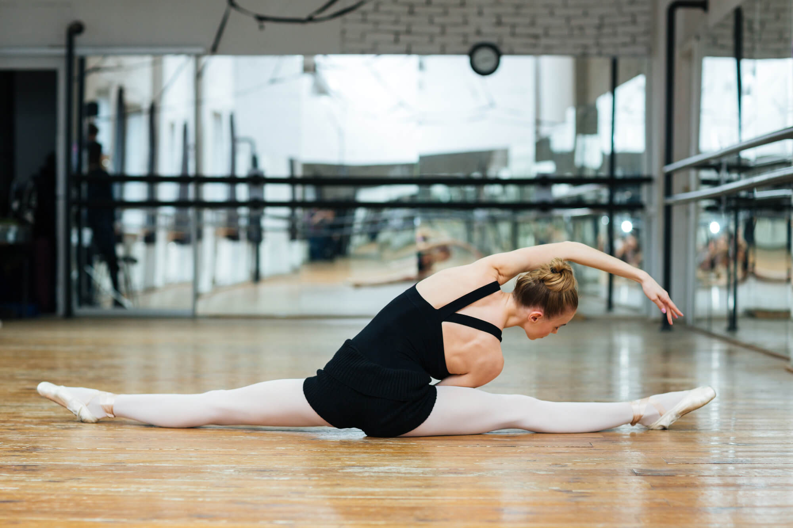
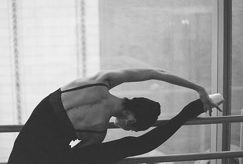
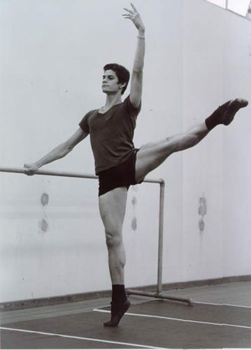
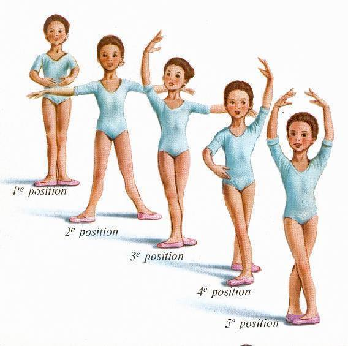

  
<!DOCTYPE html >
<html  lang = " en " ></html>
    <head>
        <meta  charset = " UTF-8 " >
        <link  rel = " stylesheet " href = "../../SRC/CSS/Style.css" >
        <title > BALLET </title >
    </head >
 
    <script src="../JS/Script.js" > </script>
               
    <body>
         <header>
                    <h1  > BALLET </h1 > <br >
                    </header>
                    
                     <br><br><br>
                       <h1  class = " sub-titulo " > O que é arte?</h1 > <br >
                         
                        
                        <h2>   A arte é uma forma do ser humano expressar suas emoções, sua história e <br>
                            sua cultura através de alguns valores estéticos, como beleza, harmonia, <br>
                            equilíbrio. A arte pode ser representada através de várias formas, em <br>
                            especial na música, na escultura, na pintura, no cinema, na dança, entre <br>
                            outras.<br>
                            <br><br>
                            Após seu surgimento, há milhares de anos, a arte foi evoluindo e<br>
                            ocupando um importantíssimo espaço na sociedade, haja vista que<br>
                            algumas representações da arte são indispensáveis para muitas pessoas<br>
                            nos dias atuais, como, por exemplo, a música que é capaz de nos fazer<br>
                            felizes quando estamos tristes. Ela funciona como distração para <br>
                            seus problemas, um modo de expressar o que sentimos aos diversos<br>
                            grupos da sociedade.<br>
                            <br><br>
                            Muitas pessoas dizem não ter interesse pela arte e nem por movimentos<br>
                            ligado a mesma, porém o que elas não imaginam é que a arte não se restringe<br>
                            a pinturas ou esculturas, também pode ser representada por formas mais<br>
                            populares, como a música, o cinema e a dança. Essas formas de arte são praticadas<br>
                            em todo mundo, em diferentes culturas. Atualmente a arte é dividida em clássica e<br>
                            moderna, qualquer pessoa pode se informar sobre cada uma delas<br>
                            e apreciar aqui melhor se encaixa com sua percepção de arte. </h2 >
                            <br><br>
                    
                   
                             
                            <h1  class = " sub-titulo " >   Ballet Clássico </h1 >
                           
                            <h2>
                            O balé clássico, além de arte, é considerado o princípio de todas<br>
                            as danças. Teve seu auge no período romântico com os famosos<br>
                            ballets de repertório. Iniciado na infância, pode preparar o<br>
                            controle motor para qualquer tipo de dança que o aluno queira<br>
                            desenvolver mais tarde. O ballet clássico proporcionar a<br>
                            conscientização corporal. Trabalha a disciplina, a postura,<br>
                            flexibilidade, o equilíbrio e a desinibição acontecem num ambiente<br>
                            agradável e Alegre. O ballet envolve todos os grupos musculares,<br>
                            desenvolve o raciocínio, ritmo, criatividade e a sensibilidade, visto ser<br>
                            uma atividade física e artística.</h2 >
                            <br><br><br>

                            <h1  class = " sub-titulo " >   MÉTODOS - Escolas </h1 >
                            
                            <h2>
                                SISTEMA CHECCHETTI <br>

                                Também conhecido como ‘escola italiana’ <br>
                                
                                Método criado pelo italiano Enrico Checchetti. Pouco divulgado no Brasil.<br>
                                Utiliza-se de muita força e virtuosidade em passos e giros difíceis. <br><br>

                                SISTEMA FRANCÊS <br>

                                Provavelmente, o mais antigo dos métodos. Deve-se a ele a criação da técnica<br>
                                clássica, tanto que a grande maioria dos passos de ballet é em francês. Seu<br>
                                mais famoso criador é Pierre Beauchamp, que reuniu e codificou as posições<br>
                                de pés e braços. É um método rígido e considerado superado por alguns<br>
                                bailarinos. <br><br>
                                MÉTODO INGLÊS (ROYAL) <br>

                                A Royal Academy of Dance (RAD) foi fundada por professores da Grã-Bretanha<br>
                                para criar um estilo único de ballet, unindo técnicas de dança francesas,<br>
                                italianas e russas. <br>

                                Na RAD os exercícios são simples e devem ser muito bem executados, tanto pela<br>
                                repetição quanto pela consciência corporal e tem como pontos fortes a<br>
                                utilização dos braços como base de força. <br>
                                 
                                É nítida a importância que se dá para o uso correto dos braços na execução de<br>
                                cada movimento, tornando-se aliado nos equilíbrios, sustentações, giros e<br>
                                saltos. A física do corpo no espaço é trabalhada como parceira da dança.<br><br>
                           
                                SISTEMA VAGANOVA  <br>

                                Também conhecido como ‘ballet russo’ <br>

                                Criado 1920 pela russa Agrippina Vaganova. Reúne a técnica francesa e inglesa,<br>
                                sofrendo apenas pequenas modificações. É o mais usado no Brasil, depois do<br>
                                método Royal. <br>

                                BALLET CUBANO  

                                A metodologia mais nova e também mais nova e também mais inovadora. Suas aulas<br>
                                são bem expansivas e trabalham muito com allegros, batteries e giros. Bailarinos<br>
                                cubanos são conhecidos por sua agilidade e força. <br><br><br>
                                </h2 >
                                 
                                <h1  class = " sub-titulo " >   Alongamentos </h1 >
                                 
                                <h2>Alongamentos são exercícios voltados para o aumento da flexibilidade<br> 
                                    muscular, que promovem o estiramento das fibras musculares, fazendo com<br> 
                                    que elas têm o seu comprimento. O principal efeito dos alongamentos e o<br>
                                    aumento da flexibilidade, que é a maior amplitude de movimento possível<br> 
                                    de uma determinada articulação. Quanto mais alongado um músculo maior será<br> 
                                    a alimentação da articulação comandada por aquele músculo e, portanto, maior<br> 
                                    sua flexibilidade. O alongamento é a prática fundamental para o bom funcionamento<br> 
                                    do corpo proporcionando maior agilidade e elasticidade, além de prevenir lesões<br> 
                                    ponto-final essencial para o aquecimento e relaxamento dos músculos, deve ser a <br> 
                                    atividade incorporada ao exercício físico, mas também pode ser praticado sozinho.<br><br>
                                    
                                Efeitos do alongamento:<br>
                                <ol>
                                <li> Relaxamento;  </li>

                                <li>  Redução de tensões musculares; </li>

                                <li> Benefício para a coordenação, pois os movimentos se tornam mais soltos e fáceis;  </li>

                                <li>Aumento do arco de maleabilidade prevenção de lesões.;  </li>

                                <li> Facilita atividades de desgaste, como por exemplo corrida, tênis, natação, ciclismo etc;  </li>

                                <li> Desenvolve a consciência corporal, à medida que a pessoa focaliza a parte do corpo que está sendo alongada; </li>

                                <li> Ativa a circulação;  </li>

                                <li> Ajuda no aquecimento, à medida que eleva a temperatura do corpo;  </li>

                                <li> Ajuda a liberar os movimentos bloqueados por tensões emocionais. </li>
                                </ol><br><br><br>

                                  

                                Os alongamentos podem ser realizados toda vez que você sentir vontade<br>
                                ponto no trabalho, no carro, assistindo TV. Podemos e devemos nos alongar<br>
                                de manhã antes de começar o dia, no final do dia para aliviar as tensões<br>
                                acumuladas, depois de ficar sentado ou em pé muito tempo e principalmente<br>
                                antes e depois de atividades físicas todas as pessoas podem aprender a <br>
                                fazer alongamentos independentemente da idade e do condicionamento físico.<br>
                                É gostoso fazer alongamentos quando se procede de forma correta,<br>
                                respeitando a sua estrutura muscular, sua flexibilidade e seus limites pessoais. <br><br><br>
                                  </h2 >
                                  <br><br>
                            
                             
                            <h1  class = " sub-titulo " >   Aquecimento </h1 >
                           
                            <h2>
                                Um aquecimento ajuda a obter mus o máximo de aproveitamento do treinamento<br>
                                ponto muitas pessoas com pressa relatam que o aquecimento não tem importância<br>
                                ou simplesmente dizem que não tem tempo para o aquecimento ou até mesmo" <br>
                                esquecem" de realizá-lo. Uma pena conto o aquecimento traz o corpo de estado<br>
                                de repouso para o estado de atividade esse feita adequadamente diminuirá o<br>
                                risco de lesão e melhorará seu desempenho. O que acontece no aquecimento? <br>
                                A temperatura se eleva aumentando o fluxo sanguíneo em todo o corpo e <br>
                                aumentando a lubrificação articular através da maior libertação do líquido<br>
                                sinovial. A frequência cardíaca se eleva adequando o sistema cardiorrespiratório<br>
                                para o esforço do treino também melhora a velocidade de contração e relaxamento<br>
                                muscular e ainda desencadeia processos químicos que melhoram o aproveitamento<br>
                                metabólico do oxigênio. 
                            <br><br><br>
                            <h1  class = " sub-titulo " >   Posições do corpo </h1 >
                             <br><br><br><br><br><br><br><br><br><br><br><br><br><br><br><br><br><br><br><br><br>
                            
                            <h1><a href="../Página Final/final.html"> Clique aqui </a></h1>
                           
            
        
    </body >
      
         

</html >